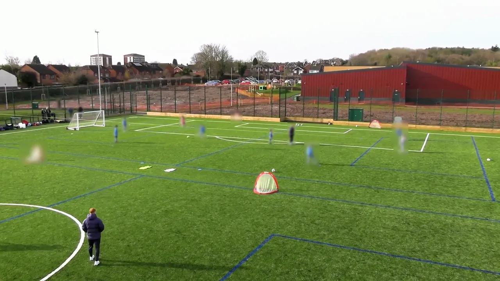

CoachVid AI
For football coaches, mentors and coach educators. Built around FA, UEFA and FIFA guidance on session design, communication, player-centred coaching and positioning.
Club-footage editionNew-footage edition
- Works with footage clubs already have, including panning cameras
- Coach talk, questioning and wait time from the coach’s own mic
- Playing-form time, stoppages and where the coach stood